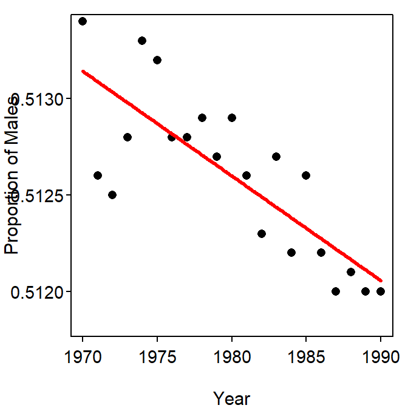

summary() because there are three p-values in that table. Be precise with your language!!
Yes there is evidence for a significant statistical change in the proportion of male births over the study period because the p-value for the slope (and the equivalent overall F p-value) is very small (p<0.0005; Table 1). The relationship is illustrated in Figure 1.
The proportion of males declined between 0.000035 and 0.000074 per year, on average (Table 2).
The very small slope coefficient is statistically different from zero because the SE for the slope coefficient is very small (0.000009; Table 1) and the overall scale of the measurements is very small.
Table 1: Summary of the linear regression of proportion of males on year.
Estimate Std. Error t value Pr(>|t|)
(Intercept) 6.201e-01 1.860e-02 33.340 < 2e-16
year -5.429e-05 9.393e-06 -5.779 1.44e-05
---
Residual standard error: 0.0002607 on 19 degrees of freedom
Multiple R-squared: 0.6374, Adjusted R-squared: 0.6183
F-statistic: 33.4 on 1 and 19 DF, p-value: 1.439e-05 Table 2: Confidence intervals for coefficients of the linear regression of proportion of males on year.
2.5 % 97.5 %
(Intercept) 5.811580e-01 6.590134e-01
year -7.394606e-05 -3.462537e-05
Figure 1: Scatterplot of the proportion of male births by year with the best-fit line.
R Appendix.
d1 <- read.csv("MaleBirths.csv")
lm1 <- lm(propmale~year,data=d1)
summary(lm1)
confint(lm1)
fitPlot(lm1,xlab="Year",ylab="Proportion of Males")